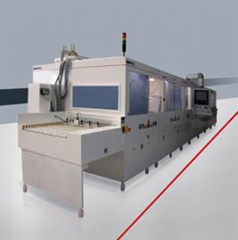
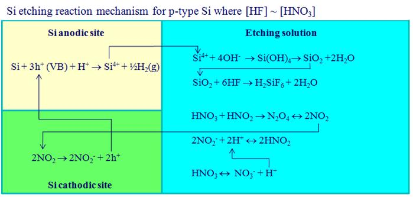
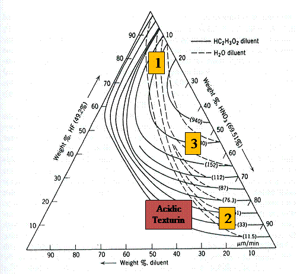
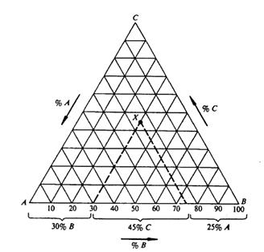
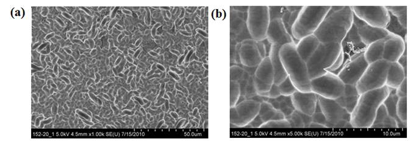
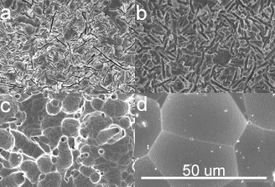

ACIDIC TEXTURING
Chemical Basis of Acidic Texturing
|
Alkaline texturing is routinely used in industry for the texturing of mono-crystalline silicon wafers. However it is not well suited to the texturing of multi-crystalline silicon wafers because the variation in crystal orientation at the surface of multi-crystalline wafers can result in large non-textured and hence highly-reflective regions. Recall alkaline etching is anisotropic and etches the {100} planes much faster than the {111} planes therefore any grains which have exposed {111} planes will be etched significantly less than any exposed {100} planes. Furthermore, excessive etching can occur at the grain boundaries resulting in surfaces that are subject to different emitter formation and preferred sites for impurities and therefore are difficult to passivate. For these reasons, multi-crystalline wafers are routinely textured using acidic solutions containing hydrofluoric acid (HF) and nitric acid (HNO3) in water. These solutions etch all silicon crystal planes at approximately the same rate and so are called isotropic etchants. The HNO3 oxidises the silicon surface and then the HF solubilises, or dissolves, the oxidised silicon. Mono-crystalline wafers can also be textured using acidic texturing however most manufacturers select not to do so as a lower average reflectance can be achieved using alkaline texturing for these wafers. 
After wire sawing, the surface of a silicon wafer is not very uniform and typically has many rough features on the surface called saw marks. The slurry used in wire saw process contains silicon carbide particles which are much harder than silicon and therefore cut through the brick during wafering process. The silicon carbide particles cause distortion and defects in the silicon lattice at the cut surface making that surface very reactive. Acidic texturing depends on this damage which is caused during the wire sawing process. Unlike alkaline texturing where the use of anisotropic etching is responsible for the texturing, in acid texturing the texturing results from isotropic etching being initiated at defect sites on the surface. Consequently, acidic texturing will depend critically on the pre-clean process (i.e., the cleaning performed after wire-sawing). It is very important that the wire-saw damage is not removed before the start of the acidic texturing process. In fact, if you were to saw-damage etch wafers before acidic texturing, then the etching rate would be much decreased and the reflectance higher.
The etching mechanism involves anodic and cathodic sites on the silicon surface as shown below in Figure 2. The HNO3 reacts with nitrous acid (HNO2), which exists in concentrated HNO3 solutions in trace amounts, to generate the oxidant nitrogen dioxide (NO2). The NO2 is attracted to cathodic sites on the silicon (i.e., where there is a slightly negative charge) and there it accepts electrons from the silicon lattice. This chemical reduction reaction can also be viewed as one that creates holes in the silicon. The resulting NO2- anion reacts with protons (H+) in the etching bath to regenerate nitrous acid (HNO2) and effectively accelerate the generation of NO2. This aspect of the silicon oxidation results in autocatalytic etching. In other words, with increased etching the concentration of HNO2 increases causing an increase in the rate of the etching reaction. The etching rate is further increased with time due to the exothermic nature of the reactions involved. The increased local heating results in an increased rate of diffusion of the reactants to the reaction site and an increased reaction rate. If the temperature of the bath is reduced, the diffusion of reactants to the surface and reaction products from the surface can be slowed. The autocatalytic and exothermic properties of the etching reaction can be used to advantage to reduce the diffusion of the autocatalytic NO2- anion from the surface and hence focus the etching on the initial sites of attack. This ability to achieve “focussed etching” enables acidic silicon etching to be used to texture silicon surfaces.
 Figure 2. Summary of the etching mechanism for p-type silicon. The holes created by the reduction of the nitrogen dioxide at the cathodic site create surface silicon atoms that are slightly positively charged. These atoms form the basis of anodic sites which can be solubilised by the HF in the solution as shown by the reactions in Figure 2 for p-type silicon. The actual reaction mechanism and etching rate depends on the silicon (n-type or p-type and doping level), the composition of the solution and the temperature.
The etching rate dependence on the concentrations of HF and HNO3 is often represented using a tri-coordinate (ternary) graph showing curves of constant etching rate (iso-etch curves) as shown in Figure 3. To read off an etching rate you need to follow the indicated arrows (which can be in clockwise or anti-clockwise direction) on the graph, find the intersection point and then select the closest iso-etch curve. This procedure is shown in the sample ternary graph shown in Figure 4. The axes of ternary graphs can be in %wt or %vol. When the units of %vol are used, then the percentages are typically in terms of the vol% of the chemical solutions routinely used to make up the baths (i.e., 49% (w/v) HF and 70% (w/v) HNO3). For example, in Figure 4 if we assume % vol axes, the identified point x corresponds to a composition (1 L) which has 250 mL of stock solution A, 300 mL of stock solution B and 450 mL stock solution C.  Figure 3. Iso-etch curves for silicon (HF:HNO3 diluent system). Adapted from Robbins and Schwartz (1960) [1].  Figure 5. Tri-coordinate graph demonstrating how an etch rate can be "read off" from the graph. |
|
{kind=link}
There are three main regions of etching that can be identified on these iso-etch curves. In region 1 depicted in Figure 3, the concentration of HF exceeds that of the HNO3 and the etching become limited by the rate at which the surface can be oxidised by the HNO3 and so the etch rate depends largely on the HNO3 concentration. In this region, although the reflectivity of an etched silicon surface can be quite low (e.g., less than 20%), the surface can be very porous with multi-crystalline grain boundaries etched very deeply, and cells fabricated from these wafers typically have lower open-circuit voltages. In region 2, the HNO3 concentration is much larger than the HF concentration and the etching rate becomes limited by the rate at which the HF can diffuse to the silicon surface to solubilise the oxidised silicon. In this region, the etching rate depends primarily on the HF concentration. Silicon surfaces etched in this region typically can become electro-polished if the HNO3:HF wt% ratio is greater than 7. This results in surfaces which are quite reflective with minimum reflectance values typically greater than 28%. In the third region, the concentrations of HF and HNO3 are approximately the same and the etching rate depends mainly on the diluent (i.e., water) concentration. Most industrial acidic texturing baths use a composition where the HNO3 concentration is greater than the HF concentration but the ratio of HNO3:HF wt% is maintained between 2-6 to ensure that electro-polishing does not occur.
Acetic acid is often used as the diluent in acidic etching baths and consequently the term “HNA” etching is used where the “H” refers to HF, the “N” to HNO3 and the “A” to acetic acid. In industrial acidic texturing water typically replaces acetic acid due to its lesser cost. The use of acetic acid can have some advantages. First, because it has a higher dielectric constant than water it causes the HNO3 to dissociate less resulting in more effective generation of the oxidant, NO2. Second, it helps the etching solution “wet” the hydrophobic silicon surface because it is more polar than water. However these advantages do not outweigh the additional expense involved in using acetic acid and the risk of contaminating subsequent processing steps with organic residue.
Industrial Acidic Texturing
Acidic texturing is typically performed in industry using an in-line machine where wafers are conveyed through the etching solution between top and bottom rollers so that both surfaces of the wafers are textured. The bath is usually maintained at 6-10 degrees C to exploit the autocatalytic and exothermic properties of silicon etching and enable focussed etching at the defect sites which result from saw-damage. If the bath temperature is too high then the etching rate will be too high and difficult to control. Also high temperatures will increase the diffusion of reaction products from the reaction site resulting in less focussed etching and higher reflectivity. The etching time is maintained very short in order to increase throughput. Preferably it is maintained between 1-3 mins depending on the equipment supplier and the baths can be up to 6 m in length.
Bath length and liquid first fill volume is dependent on the machine’s designed capacity. In order to keep the acid bath uniform and for safety reasons, the machine is designed to be very shallow. A large recirculation tank is located underneath the processing bath and in this tank the acidic solution is chilled and maintained at the required process temperature.
Industrial acidic texturing solutions can vary in composition. However, a commonly-used “recipe” adopted in industry is the “UKN” recipe because it was developed at the University of Constance (Konstanz). With this recipe typically the HF and HNO3 concentrations are maintained at 10-25 and 40-50 vol%, respectively, and the diluent is water. This means the composition is slightly on the electro-polishing side. It typically results in minimum reflectance values of 24-25% when implemented correctly. Manufacturers of acidic texturing equipment typically specify a bath make-up recipe and then dosing instructions which maintain the HF and HNO3 concentrations at the ideal levels. The dosing levels depend on how the HF and HNO3 are consumed by the etching reaction. Intermediates of the etching process (e.g., nitrogen oxides) can be lost as volatile gases which are removed by exhaust system. Equipment providers typically specify the exhaust conditions to be used because the feeding of the bath will depend on gas formation and potential loss of oxidant via the exhaust. Some HF can also be lost in the exhaust of these baths and so correct exhaust ducting is very important.
When setting up an acidic texturing bath there are two important factors that need to be considered.
1. Because of the autocatalytic nature of the oxidation reaction, it takes some time for the oxidation rate to stabilise. This is often referred to as the induction period.
2. The etching reaction results in the formation of hexafluorosilicic acid (H2SiF6) which can alter the etching rate of the solution by: (i) directly etching SiO2; and (ii) increasing the viscosity of the solution. Most equipment providers suggest an optimum level for H2SiF6 of 70-100 g/L but some baths are run at higher concentrations.
Acidic texturing baths are often stabilised by processing a number of dummy wafers before texturing for cell production commences.
Baths are typically maintained by an “on-the-run” continuous feed (dose) and bleed (overflow) with the bleeding of solution being required to keep the bath volume constant and dilute the generated H2SiF6. Water is not added during standard production, due to the fact that it is generated from acidic texturing reaction. Bath volume is also reduced by “drag-out” as each wafer exiting the bath takes out a small volume of the etching solution on its surface. Although small, this loss of solution needs to be accounted for in the bath dosing procedure. However, even with routine dosing/bleeding of the bath to control the levels of HF, HNO3, and H2SiF6 bath life is limited. Bath lifetimes of more than 2 million processed wafers are common practice, although the actual lifetime depends very much on the cleanliness of the incoming wafers. Foreign elements, which do not dissolve in the bath, can be carried in by the wafers and can accumulate in the bottom of the bath. Periodically baths must be emptied and cleaned, and the etching solution appropriately treated and disposed.
Most manufacturers suggest that the optimum etch loss is 4-5 um per side. Acidic texturing performance is often controlled by monitoring the etch loss and altering the speed at which the wafers are transported through the bath to ensure the ideal etch loss. Performance control can also be achieved using reflectivity measurements and bath chemical analysis.
Textured Surface Morphology
When using the “UKN” recipe, the final textured surface comprises multiple concave etched regions which are in the order of 5-10 um in length. From the scanning electron microscope images shown below in Figure 5, at lower resolution these concavities appear like “worms”. If the wafers surfaces are over-etched then the concavities increase in size and the surface become more reflective.

Figure 5. Scanning electron microscope images of a multi-crystalline wafer surface textured using the "UKN" recipe at a magnification of (a) 1000X; and (b) 5000X.
The “as-cut” surface of wafers is typically very rough as shown in Figure 6a. If the surface is insufficiently etched, then a crack-dominated texture results (see Figure 6b). Although the average reflectance of this texture is typically lower than 24% enabling a higher short circuit current to be recorded in final devices, significant surface damage is still present and this results in lower open circuit voltages. If surfaces are etched well beyond the damaged layer the wafer surface becomes “bubble-like” as shown in Figure 6d and typically has a much higher reflectance.

Figure 7. Images showing a series of multi-crystalline wafer surfaces textured for increasing times: (a) weakly-textured with an average reflectance of ~20%; (b) further textured resulting in a crack-dominated texture with a reflectance of ~ 17%; (c) textured sufficiently to eliminate all sawing damage and comprising randomly distributed etch pits with an average reflectance of 22%; and (d) textured well beyond the damaged layer resulting in a bubble-like texture having a reflectance of ~ 33%. Taken from [2].
Reflectance of Textured Surfaces
Textured multi-crystalline wafer surfaces which have been etched for an average 4-5 um per side typically have a weighted average reflectance[1] (WAR) of 24-25%. The actual reflectance can vary significantly as it will depend on the initial wafer surface and how it was sawn. Also not all reflectance values reported in the literature are WAMs. It is quite common to also report the minimum reflectance which is lower than the WAM. If multi-crystalline wafers are alkaline textured then typically a reflectance of more than 30% results.
Post-Texturing Processing
After texturing, wafers are rinsed and then pass through the following three cleaning baths. After each clean the wafers are rinsed in deionised water as described for the cleaning process which follows alkaline texturing.
1. Dilute [e.g., 5% (w/v)] potassium hydroxide (KOH). This serves to remove any porous silicon may have formed during the texturing. Porous silicon etches at rate of ~ 50 nm/s in 5% KOH at room temperature which is much faster than for crystalline silicon. Although this process has quite wide process window, the bath temperature needs to be reasonably constant.
2. Hydrochloric acid [typically ~ 10% (w/v)]: This is to remove traces of metal ions such as sodium or potassium ions, or other metal contaminants that may have been introduced to the bath by insufficiently clean wafers or low purity HF or nitric acid stock solutions.
3. Dilute HF [typically <= 10% (w/v)]. This final cleaning process is required to remove any native oxides that may have been formed on the surface.
One of the contributors to the cost of the acidic texturing process is the requirement to use sufficiently pure solutions of HF and HNO3. If these solutions contain metal contaminants, metal ions can be effectively “plated” to the silicon surface at the cathodic sites and be difficult to remove in the subsequent cleaning steps. When the wafers are subsequently diffused, these metal contaminants can be driven into the wafer and reduce minority carrier lifetimes and final cell performance. Many equipment providers only guarantee texturing performance if specified semiconductor grade chemicals are used.
References
[1] Robbins, H. and Schwartz, B. (1960) Chemical etching of silicon – II the system of HF, HNO3, H2O, and HC2H3O2. J. Electrochem. Soc., 107, 108-111.
[2] Marstein, E. S., Solheim, H. J., Wright, D. N. and Holt, A. (2005) Acidic texturing of multicrystalline silicon wafers, Proc, of the 31st IEEE Photovoltaics Specialist conference, Orlando, Florida, USA, pp. 1309-1312.